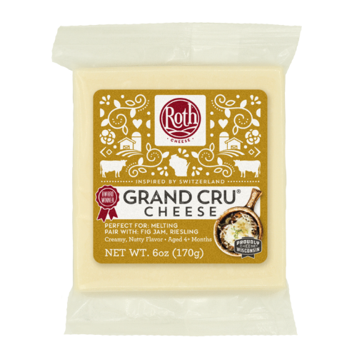

Alpine#
Alpha Tolman (Jasper Hill Farm)#

Origin: Vermont
Milk: Cow
Purchase location: Whole Foods
Purchase date: 07/09/22
Julie’s comments: Yellowy tan firm cheese with a crusty rind. Chalky texture a bit, but still kinda smooth. Earthy, very woodsy flavor with a mild sharpness at end. Reminds me of comte. 2.23/5
Andrew’s comments: Flavor pretty mild, earthy, with some later funk that reminds me of fondue in a way. Chalky texture, not my favorite. Addendum: Not so mild actually, distinctly unlikeable taste (but not terrible). 1.3/5
Challerhocker (Wegmans)#

Origin: Switzerland
Milk: Cow
Purchase location: Wegmans
Purchase date: 09/04/22
Julie’s comments: Tan/pale firm cheese with a waxy crumbly rind. Creamy & mildly grainy texture, dissolves quickly. Salty up front, then grassy and then funky (static up the back of nose at end, especially the rind). At first I really didn’t like it, but better on day 2. 1.53/5
Andrew’s comments: This one’s ok, a bit overly salty and rather funky in hay-like way. Some nice grains in texture. Does go up nose, less pleasant. 0.8/5
Fontina Fontal (FABES)#

Origin: Italy
Milk: Cow
Purchase location: Whole Foods
Purchase date: 10/26/22
Julie’s comments: Pale ivory-ish cheese with a patterned orange waxy rind, firm. Creamy, mildly gummy texture that disintegrates in the mouth. Very mild cheese - a bit nutty & salty but overall neutral, yet not too boring. Would be great paired with any yummy jam. 3.04/5
Andrew’s comments: Mild, buttery, with a bit of sharp & tangy finish. Reminds me a bit of an artisinal fancier Muenster. Nice semi firm, semi chewy texture. Not the most exciting, has some “cheese cube” vibes, but super snackable & easy to put away a lot. Probably nice melted on sammie. 3.5/5
Organic Grand Cru Reserve (Roth)#
{kind=link}
Origin: Wisconsin
Milk: Cow
Purchase location: Whole Foods
Purchase date: 08/15/22
Julie’s comments: Firm, pale tan cheese with a darker edge & a brownish gray rind. Gritty texture, salty, and pretty grassy/earthy flavor. Reminds me of a gruyere. Decent cheese, not the most versatile, but okay. 2.28/5
Andrew’s comments: Gummy & gritty texture, grassy/livestocky flavor, mild in center but funkier rind. Reminds me of a few others which generally aren’t my favorite. 1.7/5
Pleasant Ridge Reserve (Uplands Cheese Company)#

Origin: Wisconsin
Milk: Cow
Purchase location: Whole Foods
Purchase date: 04/06/22
Julie’s comments: Tan firm cheese that gets slightly darker towards the thin waxy rind. Subtle flavor - grassy and a bit tangy. Texture is a bit gritty/crumbly - not excellent. Pretty boring - needs a jam or something - or grilling! 2.25/5
Andrew’s comments: Flavor is unusual, if subtle and a bit boring. Can’t figure out exactly what uniqueness is. Maybe cottage cheese? With a bit of sweetness. Semi-firm texture, bit of grit. 2.0/5